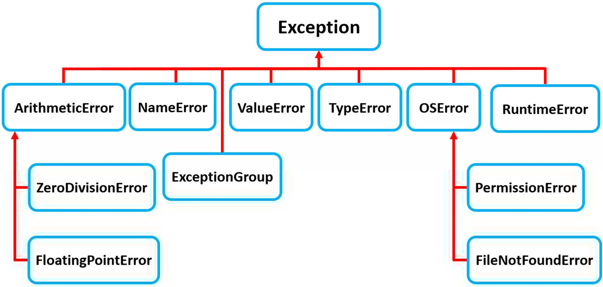

try:
print(1/0)
except ZeroDivisionError as e:
print(f"An specific error has occured: [{e}]")An specific error has occured: [division by zero]Tony Phung
November 5, 2024

Python follows the :
Unexpected things or errors will occur at times in Python (and in life).
They might happen so often they get their own names and get categorised.
Python has done exactly that. Creating names for specific errors whilst maintaining Python’s hierarchy structure too. Some common (automatic) errors are:
SyntaxError exception)KeyError exception)ZeroDivisionError, TypeError exception)IndexError exception)AttributeError exception)All the above exceptions, being automatically raised by Python, are known as In-Built exceptions.
That is, when something unexpected happens, Python will:
raise or create a specific type Exception object (related to the error),
Exception Handler (EH)call-stack,
Exceptions can also manually raised by the developer (discussed later).
EH are created with Try-Except statements:
How can a developer know all the exceptions?
Python is an inherited language:
Exception class:BaseException classA developer can raise an exception when a condition is met. This condition could be:
True, False)<, >, ==, >=, <=, !)Then once the exception is caught, it can be handled in an except clause. This whole process is known as the Exception-Handler (EH)
except clauseA bare except clause:
Exception (most built-in exceptions!)Exception will:
except clause exampleexcept Exception clauseBy catching Exception as e, there are attributes the developer can use:
try:
with open("file.log") as file:
read_data = file.read()
except Exception as e:
import traceback
print(f"[Error Occured 1/3]: \n\t[ {e} ]\n")
print(f"[Error Type 2/3]: \n\t[ {type(e).__name__} ]\n")
print(f"[Error Traceback 3/3]: \n\t[ {traceback.format_exc()} ]")[Error Occured 1/3]:
[ [Errno 2] No such file or directory: 'file.log' ]
[Error Type 2/3]:
[ FileNotFoundError ]
[Error Traceback 3/3]:
[ Traceback (most recent call last):
File "/tmp/ipykernel_76566/3916192492.py", line 2, in <module>
with open("file.log") as file:
File "/home/tonydevs/.local/share/virtualenvs/blog-T-2huGx2/lib/python3.10/site-packages/IPython/core/interactiveshell.py", line 324, in _modified_open
return io_open(file, *args, **kwargs)
FileNotFoundError: [Errno 2] No such file or directory: 'file.log'
]in-built exceptionassert keywordAssertionError.raise.raise an Exception() (when condition met)Below example raises an exception when a specific value is above arbitrary value (e.g. 5)
This exception can only be manually raised because it is:
In a way, this is more like:
# number = 1
number = 6
if number > 5:
raise Exception(f"[Manual Exc Raised & Caught]: The number should not exceed 5. ({number=})")
print(number)--------------------------------------------------------------------------- Exception Traceback (most recent call last) Cell In[9], line 4 2 number = 6 3 if number > 5: ----> 4 raise Exception(f"[Manual Exc Raised & Caught]: The number should not exceed 5. ({number=})") 5 print(number) Exception: [Manual Exc Raised & Caught]: The number should not exceed 5. (number=6)
AssertionError with assert (when condition met)number = 1
assert(number < 5), f"[Manual Exc Raised & Caught]: The number should not exceed 5. ({number=})"
print(number)1# example: https://realpython.com/python-exceptions/
def linux_interaction():
import sys # https://docs.python.org/3.10/library/sys.html
if "linux" not in sys.platform:
raise RuntimeError("Function can only run on Linux systems.")
print(f"Running on a Linux system: [{sys.platform}]")
linux_interaction()Running on a Linux system: [linux]# example: https://realpython.com/python-exceptions/
def windows_interaction():
import sys # https://docs.python.org/3.10/library/sys.html
if "windows" not in sys.platform:
raise RuntimeError("Function can only run on Windows systems.")
print(f"Running on a Windows system: [{sys.platform}]")
windows_interaction()--------------------------------------------------------------------------- RuntimeError Traceback (most recent call last) Cell In[12], line 7 5 raise RuntimeError("Function can only run on Windows systems.") 6 print(f"Running on a Windows system: [{sys.platform}]") ----> 7 windows_interaction() Cell In[12], line 5, in windows_interaction() 3 import sys # https://docs.python.org/3.10/library/sys.html 4 if "windows" not in sys.platform: ----> 5 raise RuntimeError("Function can only run on Windows systems.") 6 print(f"Running on a Windows system: [{sys.platform}]") RuntimeError: Function can only run on Windows systems.
This Custom Exception are exceptions that the developer can create in-built exceptions may not be suitable.
Scenarios may require them:
CE are created by the:
class NameOfCustomException(Exception): use class constructor and inherit from Exception.
raise exception in a function defintion (when condition is met):
class PlatformException(Exception):
"""Incompatible platform."""
pass
def linux_interaction():
import sys
if "linux" not in sys.platform:
# raise RuntimeError("Function only for Linux systems.") # previous-code: in-built exception
raise PlatformException("Function only for Linux systems.") # updated-code: custom exception
print("Doing Linux things.")
linux_interaction()Doing Linux things.class GradeValueError(Exception):
pass
def calculate_average_grade(grades):
total = 0
count = 0
for grade in grades:
if grade < 0 or grade > 100:
raise GradeValueError(
"grade values must be between 0 and 100 inclusive"
)
total += grade
count += 1
return round(total / count, 2)
print(calculate_average_grade([80,70,-90]))
print("Exception is not handled, Program is terminated by Python. This line is not printed")--------------------------------------------------------------------------- GradeValueError Traceback (most recent call last) Cell In[14], line 16 13 count += 1 14 return round(total / count, 2) ---> 16 print(calculate_average_grade([80,70,-90])) 17 print("Exception is not handled, Program is terminated by Python. This line is not printed") Cell In[14], line 9, in calculate_average_grade(grades) 7 for grade in grades: 8 if grade < 0 or grade > 100: ----> 9 raise GradeValueError( 10 "grade values must be between 0 and 100 inclusive" 11 ) 12 total += grade 13 count += 1 GradeValueError: grade values must be between 0 and 100 inclusive
Captured Error output with less verbosity. This may be suitable and it may not.
try:
GPA = calculate_average_grade([80,70,-90])
except GradeValueError as e:
print(f"Captured Error: [{type(e).__name__}]:\n\t[{e}]\n")
# import traceback
# print(f"Traceback here: \n\t{traceback.format_exc()}")
else:
print(f"Congrats, your gpa is {GPA}")
print(f"Finished Grading!")Captured Error: [GradeValueError]:
[grade values must be between 0 and 100 inclusive]
Finished Grading!By using traceback, the verbose output could also be provided.
try:
GPA = calculate_average_grade([80,70,-90])
except GradeValueError as e:
print(f"Captured Error: [{type(e).__name__}]:\n\t[{e}]\n")
import traceback
print(f"Traceback here: \n\t{traceback.format_exc()}")
else:
print(f"Congrats, your gpa is {GPA}")
print(f"Finished Grading!")Captured Error: [GradeValueError]:
[grade values must be between 0 and 100 inclusive]
Traceback here:
Traceback (most recent call last):
File "/tmp/ipykernel_76566/3646266675.py", line 2, in <module>
GPA = calculate_average_grade([80,70,-90])
File "/tmp/ipykernel_76566/2024016610.py", line 9, in calculate_average_grade
raise GradeValueError(
GradeValueError: grade values must be between 0 and 100 inclusive
Finished Grading!def division(a, b):
try:
return {
'success': True,
'message': 'OK',
'result': a / b
}
except (TypeError, ZeroDivisionError, Exception) as e:
return {
'success': False,
'message': str(e),
'type': type(e).__name__,
'result': None
}
result1 = division(10,10)
result2 = division(10, 0)
result3 = division("A", 10)
print(result1)
print(result2)
print(result3){'success': True, 'message': 'OK', 'result': 1.0}
{'success': False, 'message': 'division by zero', 'type': 'ZeroDivisionError', 'result': None}
{'success': False, 'message': "unsupported operand type(s) for /: 'str' and 'int'", 'type': 'TypeError', 'result': None}